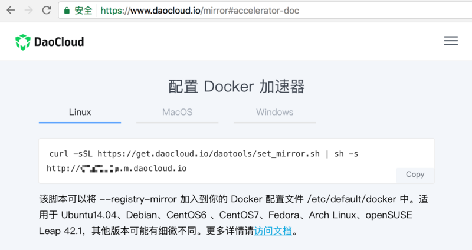
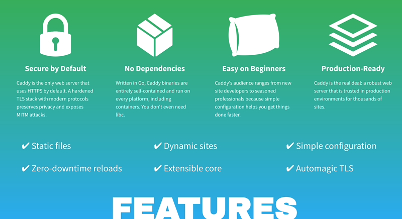
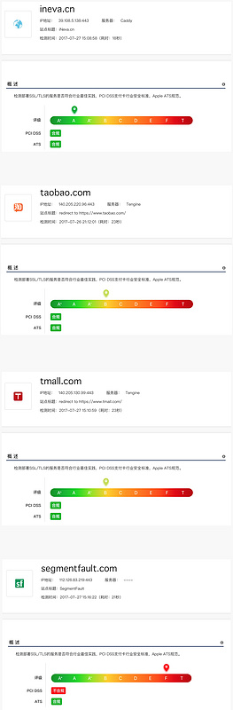
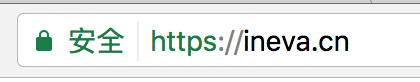

0x00
本文是笔者实践总结的技巧，介绍搭建云主机的方法，主要基于Docker部署系列服务。从个人开发者需求出发，一步一步搭建自己的服务。
本文适合兜里没很多💰又希望拥有属于自己的云服务的开发者，完成下面的操作，需要基本的Linux使用技能。
说明
由于使用#做注释，所有命令行使用$做前缀，表示当前是一行命令
选购云主机
云主机品牌选择
云主机国内很多平台可以购买，腾讯的，阿里的，网易的等等，可根据自己的喜好进行选择，笔者选择的是阿里云。
云主机配置选择
选择好云主机品牌以后，需要选购云主机了，云主机配置越高价格越贵，笔者选择的是最低配的配置单核CPU，1GB内存，1M带宽，活动价购买的330RMB一年，经测，可以稳定运行后面提到的所有服务。人民币玩家可以选购更高的配置。
笔者购买的服务器是活动套餐，包含了1M带宽，所以不另外选择。如果是直接购买，建议个人开发者可以带宽选择按量计费，去年一年下来用不了几块钱，而1M带宽一年200+。
操作系统选择
这个可根据自己的使用习惯进行选择，下面的操作都是基于Ubuntu 16.04 x64进行操作，如果大家跟着输入命令，建议使用选择一样的系统。
我个人更喜欢Ubuntu，因为附带的命令行工具使用起来比较便捷，默认情况下的配置就很好，只需要很少的配置改动，用户体验比较好。
系统基本安装配置
配置免密码登录
本地主机操作：
1 | 检查公钥是否存在 |
看到一长串字符串输出，这个是你本地电脑的公钥，将它复制到粘贴板。如果看不到任何输出，则输入下面的命令生成，注意备份这两个文件：~/.ssh/id_rsa ~/.ssh/id_rsa.pub 如果你还不知道这两个文件是什么，赶紧百度学习。知道他们是什么很很很很很很很很很很很重要。
1 | 一直按回车就可以了 |
连接到云主机，配置信任公钥
1 | xx.xx.xx.xx表示你的云主机公网IP，此时还需要输入密码才能连接 |
验证配置
1 | 退出刚刚的连接回到本地电脑 |
请务必确保已经验证配置的正确性再进行下面的步骤，否则可能导致关闭ssh密码登录后你无法连接到云主机
关闭ssh密码登录
1 | 编辑sshd配置文件 |
至此，你再也不用担心ssh会被黑客破解了，只有拥有你本地电脑密匙对的人才可以远程登录到云主机。
安装oh-my-zsh提高命令行效率（可选）
ho-my-zsh是一个很火爆的开源工具在github上star数5W+，可以显著提高命令行操作的效率，非常推荐大家安装使用，详细了解请访问项目地址：
https://github.com/robbyrussell/oh-my-zsh
1 | apt-get install zsh |
配置虚拟内存
由于我选购的主机内存比较低，降低系统完全卡死的概率，需要挂载一个虚拟内存。
虚拟内存的大小，一般不要超过当前内存大小，笔者选购的云主机是1GB内存，所以设置1GB虚拟内存。
1 | 创建虚拟内存文件 |
防火墙疑问
为什么不开启防火墙，因为Docker跟防火墙有冲突，某些情况下会导致防火墙失效，为了配置方便，系统内不开启防火墙，直接使用云主机提供商提供的防火墙进行端口防护。如果使用阿里云，在网页后台可以进行配置。
域名配置（可选）
域名选购
域名购买的渠道很多，com域名比较贵，cn域名性价比最高，笔者买的是cn域名，10年，费用300+RMB
DNS配置
DNS配置一个A记录*指向主机公网IP即可。
DNS服务商，可以选用域名购买放的配置后台，也可以转到别的平台上配置，腾讯家的DNSPod配置简单易用，所以笔者一直在用这个。
DNS配置好了以后，后面ssh连接就可以直接使用域名连接了，不需要记忆晦涩的IP地址了。
Docker安装部署配置
Docker安装
本来Docker官方安装步骤比较多，而且服务器在国外，速度非常慢。还好，阿里工程师做了国内景象，并且写好了一键安装脚本，一行命令搞定。
另外，国内的DaoCloud也提供类似的镜像服务https://download.daocloud.io/Docker_Mirror/Docker，也可加速安装过程。
1 | curl -sSL http://acs-public-mirror.oss-cn-hangzhou.aliyuncs.com/docker-engine/internet | sh - |
安装Docker Compose
这里用的是DaoCloud的镜像加速下载，当然也可到源项目地址里面下载，只是速度略慢:
https://github.com/docker/compose
1 | curl -L https://get.daocloud.io/docker/compose/releases/download/1.12.0/docker-compose-`uname -s`-`uname -m` > /usr/local/bin/docker-compose |
docker pull 加速
在国内从Docker官方服务器拉取镜像，速度非常慢，还好国内很多公司做了免费的加速镜像，阿里云、DaoCloud都有提供这样的免费服务。

针对 Ubuntu 15.04 16.04 的用户，下面的配置里面，最关键的是加速地址https://xxxx.mirror.aliyuncs.com，使用阿里云的话，需要登录阿里云后台以后，访问以下地址即可获取到：
https://cr.console.aliyun.com/#/accelerator
DaoCloud在这里获取：
https://www.daocloud.io/mirror#accelerator-doc
1 | mkdir -p /etc/systemd/system/docker.service.d |
部署HTTP网关（使用caddy，支持https）
背景
说起HTTP网关，大家听到过最多的，我想应该是 nginx apache，这两个软件确实是稳定、功能强大，并且大家都比较熟悉，但是，唯一的问题是，他们的配置实在是太太太太太太太太太繁琐了，配置文件可以写得很长，老鸟也需要备份一些常用配置片段，菜鸟们更是经常被一堆配置吓到，亦或是因为一点点配置细节没注意到耽误了一个下午。
当我们的站点需要支持HTTPS时，还需要额外弄到证书，购买或者申请免费的Let’s Encrypt，并且我们还得关注证书是否已经过期，我偶尔也会看到一些站点，因为证书过期，浏览器提示访问不安全。
解决方案
为了解决上面提到的问题，我们请出今天的主角Caddy Server

主要特点
- 默认开启HTTPS，自动管理HTTPS证书（利用Let’s Encrypt）
- 使用
go语言开发，单二进制文件运行，无任何依赖 - 非常适合初学者（老鸟用着也省心）
- 性能稳定，可用于线上产品
- 默认开启 HTTP 2.0 支持
- 配置起来疯狂地简单
HTTPS安全检测
使用https://myssl.com进行评估：
第一个是笔者的网站，直接使用Caddy的默认配置，后面三个都是站点大家都认识，大家可以感受一下测试结果。使用Caddy，最少只需要一行配置，就可以拥有A级的HTTPS安全防护！

Caddyfile简介
Caddyfile是caddy的配置文件，详细文档查看这里https://caddyserver.com/docs/http-caddyfile
以下是一个Caddyfile示例，它的效果是，启动www.ineva.cn ineva.cn两个静态文件虚拟主机，访问这两个站点时，如果访问的是http协议，会自动跳转到https，开启HTTP2.0支持，网站资源文件在/www目录下。
1 | www.ineva.cn, ineva.cn { |
开启gzip压缩支持
1 | www.ineva.cn, ineva.cn { |
反向代理
1 | api.ineva.cn { |
反向代理，并且让后端服务感知到客户端
1 | api.ineva.cn { |
反向代理，并支持websocket
1 | api.ineva.cn { |
快速部署
文件清单
- docker-compose.yml
官方的caddy docker镜像，只有基本功能，找了个alpine版的zzrot/alpine-caddy，所有功能都编译到里面了，并且包很小，下面是配置内容
1 | version: '2' |
- Caddyfile
ineva.cn需要改成你的域名
1 | www.ineva.cn, ineva.cn { |
把上面两个文件上传到云主机/docker/caddy目录
1 | cd /docker/caddy |
浏览器访问你的域名，看看浏览器地址，恭喜你，已经部署了自己的https服务，但是由于你服务器8080端口上没有开启服务，所以页面应该是看到500。

部署git服务（使用gogs）
背景介绍
git服务有很多选择，除了大名鼎鼎的 https://github.com
国内还有：
https://git.oschina.net
https://coding.net
上面的服务都是注册账号就可以使用的。但是说起自部署的git服务，大家可能第一个想到的是
https://gitlab.com/
gitlab大法是好，并且也可以很容易用docker一键部署，但是它2G内存起步的配置要求，单核1G内存的低配主机表示吃不消。
gogs对配置要求极地，并且功能基本齐全，是非常好的选择
gogs简介
- 开源项目地址：https://github.com/gogits/gogs
- 基于go开发，单二进制文件即可运行
- 完全仿照gihub设计，大部分功能都已经完成了
- 对配置要求极地，下面是闲置时获取的数据指标，内存占用不到100M
1 | NAME CID CPU MEM NET RX/TX IO R/W PIDS |
安装部署
/docker/gogs/docker-compose.yml
1 | version: "2" |
/docker/gogs/data/gogs/conf/app.ini
配置文件需要自己修改一些关键值
APP_NAME：站点标题
DOMAIN：域名
ROOT_URL：外部URL
SECRET_KEY：安全密码
1 | APP_NAME = Gogs |
启动服务
1 | cd /docker/gogs |
浏览器访问 http://git.xxxx.cn 搞定